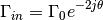

skrf.tlineFunctions.reflection_coefficient_at_theta¶
- skrf.tlineFunctions.reflection_coefficient_at_theta(Gamma0, theta)¶
reflection coefficient at a given electrical length.

Parameters : Gamma0 : number or array-like
reflection coefficient at theta=0
theta : number or array-like
electrical length, (may be complex)
Returns : Gamma_in : number or array-like
input reflection coefficient

Previous topic
skrf.tlineFunctions.electrical_length_2_distance
Next topic
skrf.tlineFunctions.reflection_coefficient_2_input_impedance